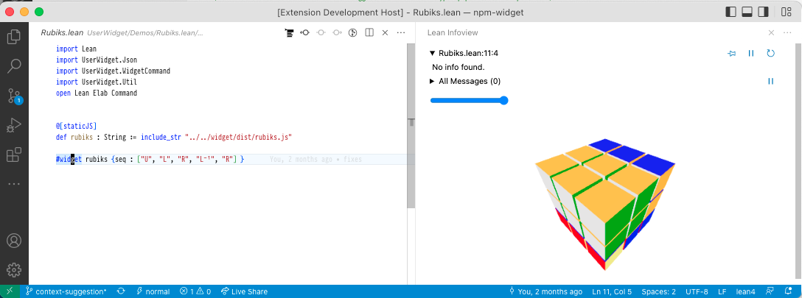
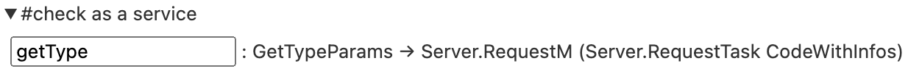

import Lean
open Lean Widget
The user-widgets system
Proving and programming are inherently interactive tasks. Lots of mathematical objects and data structures are visual in nature. User widgets let you associate custom interactive UIs with sections of a Lean document. User widgets are rendered in the Lean infoview.

Trying it out
To try it out, simply type in the following code and place your cursor over the #widget command.
@[widget_module]
def helloWidget: Widget.Module
helloWidget : Widget.Module: Type
Widget.Module where
javascript := "
import * as React from 'react';
export default function(props) {
const name = props.name || 'world'
return React.createElement('p', {}, name + '!')
}": String
"
import * as React from 'react';
export default function(props) {
const name = props.name || 'world'
return React.createElement('p', {}, name + '!')
}"
#widget helloWidget: Widget.Module
helloWidget
If you want to dive into a full sample right away, check out
RubiksCube.
Below, we'll explain the system piece by piece.
⚠️ WARNING: All of the user widget APIs are unstable and subject to breaking changes.
Widget sources and instances
A widget source is a valid JavaScript ESModule
which exports a React component. To access
React, the module must use import * as React from 'react'. Our first example of a widget source
is of course the value of helloWidget.javascript.
We can register a widget source with the @[widget] attribute, giving it a friendlier name
in the name field. This is bundled together in a UserWidgetDefinition.
A widget instance is then the identifier of a UserWidgetDefinition (so `helloWidget,
not "Hello") associated with a range of positions in the Lean source code. Widget instances
are stored in the infotree in the same manner as other information about the source file
such as the type of every expression. In our example, the #widget command stores a widget instance
with the entire line as its range. We can think of a widget instance as an instruction for the
infoview: "when the user places their cursor here, please render the following widget".
Every widget instance also contains a props : Json value. This value is passed as an argument
to the React component. In our first invocation of #widget, we set it to .null. Try out what
happens when you type in:
structure HelloWidgetProps: Type
HelloWidgetProps where
name?: HelloWidgetProps → Option String
name? : Option: Type → Type
Option String: Type
String := none: {α : Type} → Option α
none
deriving Server.RpcEncodable: Type → Type
Server.RpcEncodable
#widget helloWidget: Widget.Module
helloWidget with { name? := "<your name here>": String
"<your name here>" : HelloWidgetProps: Type
HelloWidgetProps }
💡 NOTE: The RPC system presented below does not depend on JavaScript. However the primary use case is the web-based infoview in VSCode.
Querying the Lean server
Besides enabling us to create cool client-side visualizations, user widgets come with the ability
to communicate with the Lean server. Thanks to this, they have the same metaprogramming capabilities
as custom elaborators or the tactic framework. To see this in action, let's implement a #check
command as a web input form. This example assumes some familiarity with React.
The first thing we'll need is to create an RPC method. Meaning "Remote Procedure Call", this
is basically a Lean function callable from widget code (possibly remotely over the internet).
Our method will take in the name : Name of a constant in the environment and return its type.
By convention, we represent the input data as a structure. Since it will be sent over from JavaScript,
we need FromJson and ToJson. We'll see below why the position field is needed.
structure GetTypeParams: Type
GetTypeParams where
/-- Name of a constant to get the type of. -/
name: GetTypeParams → Name
name : Name: Type
Name
/-- Position of our widget instance in the Lean file. -/
pos: GetTypeParams → Lsp.Position
pos : Lsp.Position: Type
Lsp.Position
deriving FromJson: Type u → Type u
FromJson, ToJson: Type u → Type u
ToJson
After its arguments, we define the getType method. Every RPC method executes in the RequestM
monad and must return a RequestTask α where α is its "actual" return type. The Task is so
that requests can be handled concurrently. A first guess for α might be Expr. However,
expressions in general can be large objects which depend on an Environment and LocalContext.
Thus we cannot directly serialize an Expr and send it to the widget. Instead, there are two
options:
- One is to send a reference which points to an object residing on the server. From JavaScript's point of view, references are entirely opaque, but they can be sent back to other RPC methods for further processing.
- Two is to pretty-print the expression and send its textual representation called
CodeWithInfos. This representation contains extra data which the infoview uses for interactivity. We take this strategy here.
RPC methods execute in the context of a file, but not any particular Environment so they don't
know about the available definitions and theorems. Thus, we need to pass in a position at which
we want to use the local Environment. This is why we store it in GetTypeParams. The withWaitFindSnapAtPos
method launches a concurrent computation whose job is to find such an Environment and a bit
more information for us, in the form of a snap : Snapshot. With this in hand, we can call
MetaM procedures to find out the type of name and pretty-print it.
open Server RequestM in
@[server_rpc_method]
def getType: GetTypeParams → RequestM (RequestTask CodeWithInfos)
getType (params: GetTypeParams
params : GetTypeParams: Type
GetTypeParams) : RequestM: Type → Type
RequestM (RequestTask: Type → Type
RequestTask CodeWithInfos: Type
CodeWithInfos) :=
withWaitFindSnapAtPos: {α : Type} → Lsp.Position → (Snapshots.Snapshot → RequestM α) → RequestM (RequestTask α)
withWaitFindSnapAtPos params: GetTypeParams
params.pos: GetTypeParams → Lsp.Position
pos fun snap: Snapshots.Snapshot
snap => do
runTermElabM: {α : Type} → Snapshots.Snapshot → RequestT Elab.TermElabM α → RequestM α
runTermElabM snap: Snapshots.Snapshot
snap do
let name: Name
name ← resolveGlobalConstNoOverloadCore: {m : Type → Type} →
[inst : Monad m] → [inst : MonadResolveName m] → [inst : MonadEnv m] → [inst : MonadError m] → Name → m Name
resolveGlobalConstNoOverloadCore params: GetTypeParams
params.name: GetTypeParams → Name
name
let c: ConstantInfo
c ← try getConstInfo: {m : Type → Type} → [inst : Monad m] → [inst : MonadEnv m] → [inst : MonadError m] → Name → m ConstantInfo
getConstInfo name: Name
name
catch _: Exception
_ => throwThe: (ε : Type) → {m : Type → Type} → [inst : MonadExceptOf ε m] → {α : Type} → ε → m α
throwThe RequestError: Type
RequestError ⟨.invalidParams: JsonRpc.ErrorCode
.invalidParams, s!"no constant named '{name: Name
name}'"⟩
Widget.ppExprTagged: Expr → optParam Bool false → MetaM CodeWithInfos
Widget.ppExprTagged c: ConstantInfo
c.type: ConstantInfo → Expr
type
Using infoview components
Now that we have all we need on the server side, let's write the widget source. By importing
@leanprover/infoview, widgets can render UI components used to implement the infoview itself.
For example, the <InteractiveCode> component displays expressions with term : type tooltips
as seen in the goal view. We will use it to implement our custom #check display.
⚠️ WARNING: Like the other widget APIs, the infoview JS API is unstable and subject to breaking changes.
The code below demonstrates useful parts of the API. To make RPC method calls, we use the RpcContext.
The useAsync helper packs the results of a call into an AsyncState structure which indicates
whether the call has resolved successfully, has returned an error, or is still in-flight. Based
on this we either display an InteractiveCode with the type, mapRpcError the error in order
to turn it into a readable message, or show a Loading.. message, respectively.
@[widget_module]
def checkWidget: Widget.Module
checkWidget : Widget.Module: Type
Widget.Module where
javascript := "
import * as React from 'react';
const e = React.createElement;
import { RpcContext, InteractiveCode, useAsync, mapRpcError } from '@leanprover/infoview';
export default function(props) {
const rs = React.useContext(RpcContext)
const [name, setName] = React.useState('getType')
const st = useAsync(() =>
rs.call('getType', { name, pos: props.pos }), [name, rs, props.pos])
const type = st.state === 'resolved' ? st.value && e(InteractiveCode, {fmt: st.value})
: st.state === 'rejected' ? e('p', null, mapRpcError(st.error).message)
: e('p', null, 'Loading..')
const onChange = (event) => { setName(event.target.value) }
return e('div', null,
e('input', { value: name, onChange }), ' : ', type)
}
": String
"
import * as React from 'react';
const e = React.createElement;
import { RpcContext, InteractiveCode, useAsync, mapRpcError } from '@leanprover/infoview';
export default function(props) {
const rs = React.useContext(RpcContext)
const [name, setName] = React.useState('getType')
const st = useAsync(() =>
rs.call('getType', { name, pos: props.pos }), [name, rs, props.pos])
const type = st.state === 'resolved' ? st.value && e(InteractiveCode, {fmt: st.value})
: st.state === 'rejected' ? e('p', null, mapRpcError(st.error).message)
: e('p', null, 'Loading..')
const onChange = (event) => { setName(event.target.value) }
return e('div', null,
e('input', { value: name, onChange }), ' : ', type)
}
"
Finally we can try out the widget.
#widget checkWidget: Widget.Module
checkWidget

Building widget sources
While typing JavaScript inline is fine for a simple example, for real developments we want to use
packages from NPM, a proper build system, and JSX. Thus, most actual widget sources are built with
Lake and NPM. They consist of multiple files and may import libraries which don't work as ESModules
by default. On the other hand a widget source must be a single, self-contained ESModule in the form
of a string. Readers familiar with web development may already have guessed that to obtain such a
string, we need a bundler. Two popular choices are rollup.js
and esbuild. If we go with rollup.js, to make a widget work with
the infoview we need to:
- Set
output.formatto'es'. - Externalize
react,react-dom,@leanprover/infoview. These libraries are already loaded by the infoview so they should not be bundled.
In the RubiksCube sample, we provide a working rollup.js build configuration in
rollup.config.js.
Inserting text
We can also instruct the editor to insert text, copy text to the clipboard, or
reveal a certain location in the document.
To do this, use the React.useContext(EditorContext) React context.
This will return an EditorConnection whose api field contains a number of methods to
interact with the text editor.
You can see the full API for this here
@[widget_module]
def insertTextWidget: Widget.Module
insertTextWidget : Widget.Module: Type
Widget.Module where
javascript := "
import * as React from 'react';
const e = React.createElement;
import { EditorContext } from '@leanprover/infoview';
export default function(props) {
const editorConnection = React.useContext(EditorContext)
function onClick() {
editorConnection.api.insertText('-- hello!!!', 'above')
}
return e('div', null, e('button', { value: name, onClick }, 'insert'))
}
": String
"
import * as React from 'react';
const e = React.createElement;
import { EditorContext } from '@leanprover/infoview';
export default function(props) {
const editorConnection = React.useContext(EditorContext)
function onClick() {
editorConnection.api.insertText('-- hello!!!', 'above')
}
return e('div', null, e('button', { value: name, onClick }, 'insert'))
}
"
Finally, we can try this out:
#widget insertTextWidget: Widget.Module
insertTextWidget